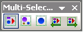
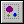
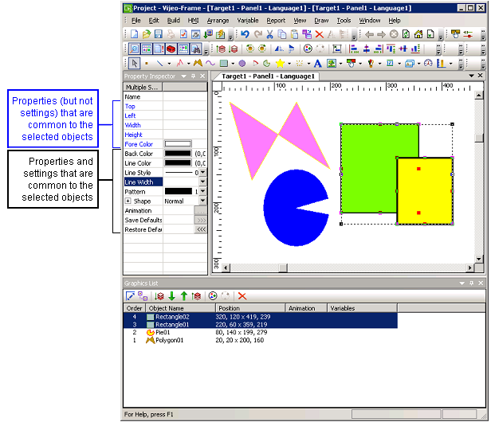

|
|
|
|
|
|
|
|
The Multi-Select Options toolbar—also found in the Arrange menu's Multi-Select submenu—lets you refine selected multiple objects in a variety of arrangements. The order of the selected objects are displayed in the Graphics List.

All: Selects all objects. The toolbar icon is enabled when you initially select one or more objects.

Individual: Allows access to the Select Previous and Select Next options when you want to select objects one at a time. Available when two or more objects are selected.
Previous: Selects, in reverse order, individual objects or object types, one selection at a time. Available only when Select Type or Select Individual is enabled.
Next: Selects individual objects or object types, one selection at a time. Available only when Select Type or Select Individual is enabled.
When selected, each object or arrangement of objects is displayed in both the Property Inspector and the Graphics List.
The following is an example of the Select Type selection. In this case, all rectangles on the panel are selected. The Property Inspector items and the Graphics List selections correspond to the objects selected on the panel.

When a property setting is not common to all selected objects, the property item's text display is blue, and the setting's attributes are not displayed.
When a property setting is common to all selected objects, the property item's text display is black, and the setting's attributes are displayed.